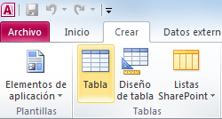
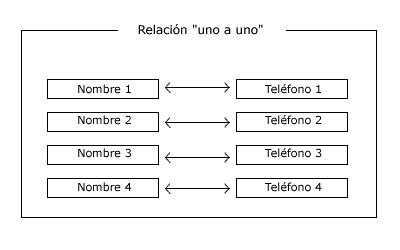

PROYECTO FINAL
BD Simples y Avanzadas
BASES DE DATOS SIMPLES
Bases de Datos:


Una base de datos es un “almacén” que nos permite guardar grandes cantidades de información de forma organizada para que luego podamos encontrar y utilizar fácilmente. Una base de datos se puede definir como un conjunto de información relacionada que se encuentra agrupada o estructurada. Desde el punto de vista informático, la base de datos es un sistema formado por un conjunto de datos almacenados en discos que permiten el acceso directo a ellos y un conjunto de programas que manipulen ese conjunto de datos. Cada base de datos se compone de una o más tablas que guarda un conjunto de datos. Cada tabla tiene una o más columnas y filas. Las columnas guardan una parte de la información sobre cada elemento que queramos guardar en la tabla, cada fila de la tabla conforma un registro.

El modelo entidad-relación ER es un modelo de datos que permite representar cualquier abstracción, percepción y conocimiento en un sistema de información formado por un conjunto de objetos denominados entidades y relaciones, incorporando una representación visual conocida como diagrama entidad-relación.
La entidad es cualquier clase de objeto o conjunto de elementos presentes o no, en un contexto determinado dado por el sistema de información o las funciones y procesos que se definen en un plan de automatización.
Son las características, rasgos y propiedades de una entidad, que toman como valor una instancia particular.
. Es el campo o atributo de una entidad o tabla que tiene como objetivo distinguir cada registro del conjunto, sirviendo sus valores como datos vinculantes de una relación entre registros de varias tablas.
Se denomina integridad referencial al tipo de interrelación que se produce entre tablas mediante un campo clave que deberá contener la cadena alfanumérica exacta al identificador de la tabla auxiliar para poder realizar la relación entre los registros.
Es una herramienta fácil de usar que permite crear rápidamente aplicaciones de base de datos basadas en el explorador que te ayudarán a dirigir tu negocio. Los datos de Access se almacenan automáticamente en una base de datos en la nube, por lo que están más protegidos. Además, puedes compartir fácilmente las aplicaciones de Access con compañeros de trabajo.
Pulsar la opción Base de datos en blanco que se encuentra dentro de la opción Nuevo de la ficha Archivo.

Es importante hacer notar que al momento de pulsar el botón Base de datos en blanco se debe crear un archivo con el nombre y ruta especificados en el panel derecho.
Una vez creada la base de datos podrás encontrar el archivo .accdb en la ruta especificada.
Haga clic en Archivo > Abrir. Si usa Access 2007, haga clic en el botón Microsoft Office > Abrir.
En el cuadro de diálogo Abrir, seleccione la base de datos que desea abrir y luego haga clic en Abrir.
En la pestaña Crear, en el grupo Tablas, haga clic en Tabla.
Se inserta una tabla nueva en la base de datos y se abre la tabla en la vista Hoja de datos.


SQL es un lenguaje de computación para trabajar con conjuntos de datos y las relaciones entre ellos. Los programas de bases de datos relacionales, como Microsoft Office Access, usan SQL para trabajar con datos. A diferencia de muchos lenguajes de computación, SQL no es difícil de leer y entender, incluso para un usuario inexperto. Al igual que muchos lenguajes de computación, SQL es un estándar internacional reconocido por organismos de estándares como ISO y ANSI.
La normalización es el proceso de organizar los datos de una base de datos. Se incluye la creación de tablas y el establecimiento de relaciones entre ellas según reglas diseñadas tanto para proteger los datos como para hacer que la base de datos sea más flexible al eliminar la redundancia y las dependencias incoherentes.
Una tabla se encuentra en primera forma normal si impide que un atributo de una celda pueda tomar más de un valor
Si una tabla esta en primera forma normal y ademas cada atributo depende de la clave primaria
Cuando una tabla esta en 2da forma normal y ademas los atributos no dependen funcionalmente de atributos que no son clave.

Las relaciones de bases de datos son asociaciones entre tablas que se crean utilizando sentencias de unión para recuperar datos. Existen relaciones de diferentes tipos. El tipo de relación que utiliza Access al unir dos tablas dependerá de cómo estén definidos los campos relacionados. .
Se creará una relación de este tipo si ambos campos relacionados son claves principales. En este tipo de relación, un registro de la tabla uno sólo puede estar relacionado con un único registro de la tabla dos y viceversa.
Se crea una relación de uno a varios si uno de los campos relacionados es una clave principal. Esta relación es la más común. Cada registro de una tabla puede estar enlazado con varios registros de una segunda tabla, pero cada registro de la segunda sólo puede estar enlazado con un único registro de la primera.
En este caso, ninguno de los campos relacionados son claves principales. Cada registro de la primera tabla puede estar enlazado con varios registros de la segunda y viceversa. Este tipo de relación implica la repetición de los campos de cada tabla; esto es lo que Access pretende evitar. Para establecer relaciones de este tipo, es necesario crear una tabla intermedia que esté relacionada con las dos de uno a varios.
Las consultas son una forma de buscar y recopilar información de una o más tablas para conseguir información detallada de una base de datos. Al crear una consulta en Access 2010, defines condiciones específicas de búsqueda para encontrar, exactamente, la información que deseas.
Como una frase, una instrucción SQL tiene cláusulas. Cada cláusula realiza una función de la instrucción SQL. Algunas cláusulas son necesarias en una instrucción SELECT. En la siguiente tabla, se enumeran las cláusulas SQL más comunes.
Muestra una lista de los campos que contienen datos de interés.
Muestra las tablas que contienen los campos de la cláusula SELECT.
Especifica los criterios de campo que cada registro debe cumplir para poder ser incluido en los resultados.
Especifica la forma de ordenar los resultados.
En una instrucción SQL que contiene funciones de agregado, especifica las condiciones que se aplican a los campos que se resumen en la instrucción SELECT.


 4
4 8
8


 2
2 3
3 6
6 7
7